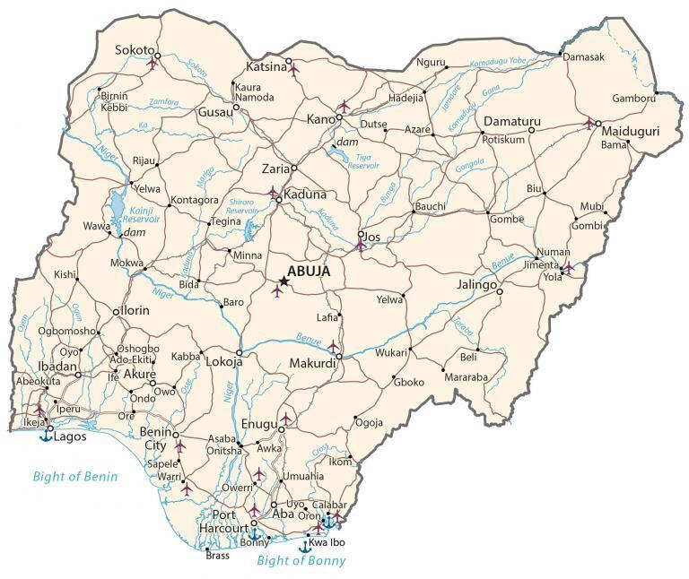

Nigeria is located in Western Africa next to the Gulf of Guinea to the south. It borders 4 other African countries including Cameroon to the east, Chad to the northeast, Niger to the north, and Benin to the west.
Nigeria is unique from other African nations because of its multiethnicity, film industry, and its 725-meter tall monolith outside the capital of Abuja, Zuma Rock. While English is the official language, there are over 500 different languages. Abuja is the capital city of Nigeria. But Lagos is not only the most populous in Nigeria, but it’s also the most populous in all of Africa.
Go back home